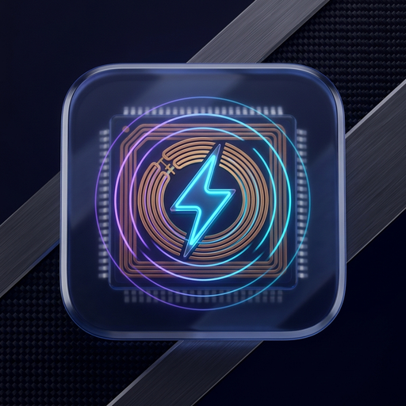
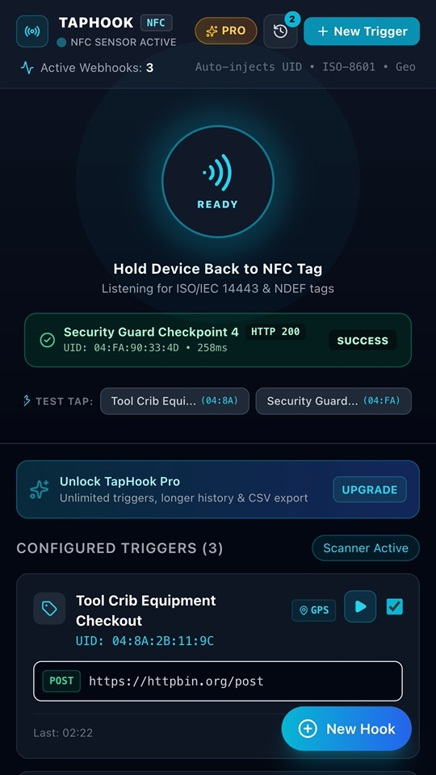
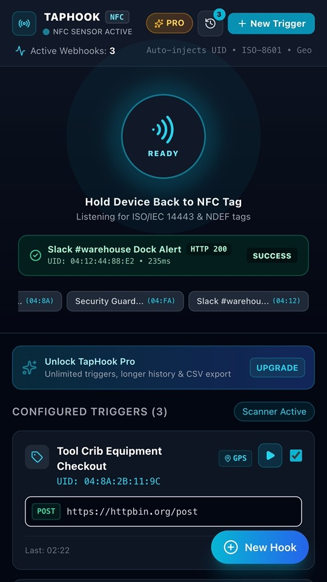
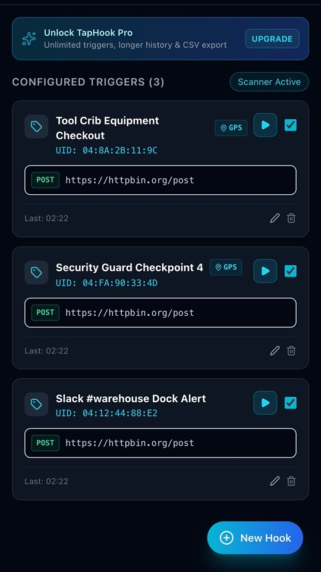

Turn any NFC tag into a button for your automations
Tap a tag with your phone and TapHook sends the web request you set up for it: to Zapier, Make, n8n, Home Assistant, Slack, Discord or any HTTP endpoint.



What it does
How it works
- Put a cheap NFC tag where you need a trigger: a door, a machine, a desk, a toolbox.
- In TapHook, link the tag to a request: URL, method (GET, POST, PUT or PATCH), headers and body.
- Tap the tag. TapHook sends the request and shows the result.
What you can send
- Values filled in at each tap:
{{tag_uid}},{{timestamp}},{{iso_timestamp}},{{device_id}}and, if you turn it on for a trigger,{{latitude}}and{{longitude}}. - Custom headers, for example a Bearer token or an API key for your endpoint.
- A JSON or text body built from your template.
See what happened
- A sound and a vibration tell you whether the request worked.
- A log of each tap: HTTP status code, response time, what was sent and the start of the reply.
Free and Pro
- Free: up to 5 triggers and the last 50 log entries.
- TapHook Pro, a one-time €3.99 in-app purchase through Google Play (no subscription), adds unlimited triggers, up to 1,000 log entries and CSV export. Available live in version 1.1.2.
Home Assistant Webhook in 2 Minutes
- 1. Create your Webhook in Home Assistant: Go to Settings → Automations & Scenes → Create Automation. Add a trigger, choose Webhook, and copy the Webhook ID or full URL (e.g.
https://your-ha-instance/api/webhook/tag_front_door). - 2. Tap your NFC Tag in TapHook: Open TapHook on your Android phone, tap Add Trigger, and hold your NFC tag to the back of the phone. TapHook instantly captures the hardware tag UID.
- 3. Paste the URL & Save: Set method to
POST, paste your Home Assistant webhook URL, and optionally customize the JSON payload with variables like{{tag_uid}}and{{timestamp}}. - 4. Tap & Automate: Tap your physical tag anytime. TapHook fires the webhook instantly in the background with immediate haptic and audio feedback.
Questions
Does TapHook work with Home Assistant?
Yes. Create a webhook automation in Home Assistant and paste its webhook URL into a TapHook trigger. Each tap of the tag fires the automation.
Does it work with Zapier, Make or n8n?
Yes. Use a "Catch Hook" / webhook trigger in Zapier, Make or n8n and paste the URL into TapHook. You can send the tag ID and time in the JSON body.
Which NFC tags do I need?
Any NFC tag your phone can read. TapHook uses the tag's ID to know which trigger to run. Your phone needs NFC turned on.
Does TapHook send my data anywhere?
Only to the URLs you enter. TapHook has no account and no server of its own; triggers and logs stay on your phone.
Questions or a feature request? Email digital.nexus.studios2@gmail.com.